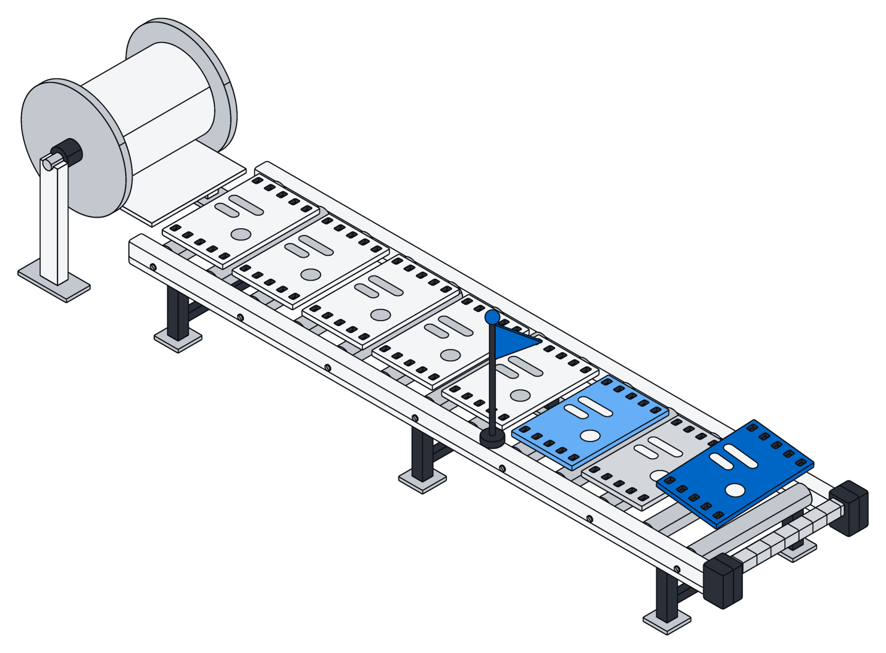

All your tools, in one place.
Mail, calendars, files, chat, docs, projects, customers and finance flow into Archive and stay up to date. Archive only reads, and the newest things arrive first.

Connect once. Stay up to date.
Each connection brings in only what is new and puts it in one space, where people and assistants can use it right away.

Only what changed.
Archive brings in only what is new or changed since last time, and nothing gets skipped or lost.
Most tools tell Archive the moment something changes, and the rest are checked every minute, less often once an account goes quiet.

Newest first.
When you first connect, Archive brings in your history newest first, so this week's mail is searchable before last year's.
Delete something in the original tool and it disappears from Archive too.

Ready to search and use.
Mail, messages, events, issues, customer records, tickets and invoices arrive as records you can search, sort and link like anything else.
Files arrive just like uploads, and Google Docs, Sheets and Slides come in as Word, Excel and PowerPoint files.

Your inbox, ready for your assistant.
Assistants work with everything that came in just like the rest of your information, then sort it, link it and file it the way your business does.
const hits = await archive.search("contract renewal", { type: "email", from: "2026-10-01", limit: 20, }) for (const hit of hits) { await archive.create("task", { title: `Follow up: ${hit.data.subject}`, source: hit.id, }) } return hits.map((h) => h.snippet)
return archive.sql(` SELECT 'email' AS kind, count(*) FROM email WHERE created_at > now() - interval '7 days' UNION ALL SELECT 'message', count(*) FROM message WHERE created_at > now() - interval '7 days' UNION ALL SELECT 'event', count(*) FROM event WHERE created_at > now() - interval '7 days'`)
Every connector.
Seven areas a team runs on. Each connector only reads, and keeps up as things change.
| Connector | What it brings in | How changes arrive |
|---|---|---|
| Mail and calendar | ||
| Gmail | Messages and attachments | Within a minute |
| Google Calendar | Events | As soon as it changes |
| Outlook mail | Messages and attachments, per folder | As soon as it changes |
| Outlook calendar | Events | As soon as it changes |
| Files | ||
| Google Drive | Files, with Docs, Sheets and Slides as Word, Excel and PowerPoint | As soon as it changes |
| SharePoint and OneDrive | Files in every drive you can read | As soon as it changes |
| Dropbox | Files | As soon as it changes |
| Box | Files | As soon as it changes |
| Chat | ||
| Slack | Channel, private and direct messages, threads, files and people | As soon as it changes |
| Microsoft Teams | Channel messages and chats | As soon as it changes |
| Google Chat | Messages in spaces | As soon as it changes |
| Docs and knowledge | ||
| Notion | Pages and databases | Within a minute |
| Confluence | Pages and their content | As soon as it changes |
| Work tracking and code | ||
| Jira | Issues | As soon as it changes |
| Linear | Issues | As soon as it changes |
| Asana | Tasks and projects | As soon as it changes |
| GitHub | Issues, pull requests and repository contents | Within a minute |
| GitLab | Issues, merge requests and projects | As soon as it changes |
| CRM and support | ||
| HubSpot | Contacts, companies, deals and other CRM records | Within a minute |
| Salesforce | Accounts, contacts, opportunities and other records | As soon as it changes |
| Pipedrive | Deals, people, organizations and activities | As soon as it changes |
| Zendesk | Tickets | As soon as it changes |
| Intercom | Conversations and contacts | Within a minute |
| Finance and meetings | ||
| Stripe | Customers, invoices, payments and subscriptions | As soon as it changes |
| Xero | Transactions and contacts | Within a minute |
| QuickBooks Online | Invoices, bills, payments and customers | Within a minute |
| Exact Online | Accounting records | As soon as it changes |
| Zoom | Meetings and recordings | Within a minute |
Built to be trusted with your inbox.
Connectors only read, put things where they belong, and stay out of the way.

Read-only
- Permission to read, nothing more, on every tool
- Archive never changes anything there
- Sign-in details are stored encrypted

Per space
- Each connection belongs to one space
- Everything it brings in lands there
- Only the right people see it

Office files
- Google Docs, Sheets and Slides as Word, Excel and PowerPoint
- Drive files handled just like uploads
- Assistants can open and read them
Questions
Does Archive ever change anything in my tools?
No. Connectors only ask to read and never write back. To act on what came in, your assistants work in Archive.
How up to date is it?
Most tools tell Archive the moment something changes. The rest are checked every minute while an account is busy, and up to once an hour when it goes quiet.
What happens when I delete something at the source?
It is deleted in Archive too. Everything that came in follows the original.
Who can see what comes in?
The members of the space the connection belongs to, according to what each may see. The same rules apply to people and assistants alike.
Can my assistants use it?
Yes. Mail, messages and events become records, and files stay files. Your assistants search and work with them like anything else.
Bring your tools in.
Connect your first account in a free workspace. No card, no sales call.